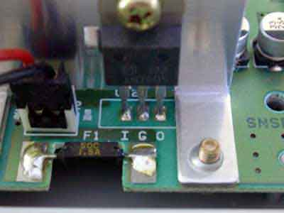
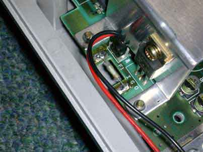
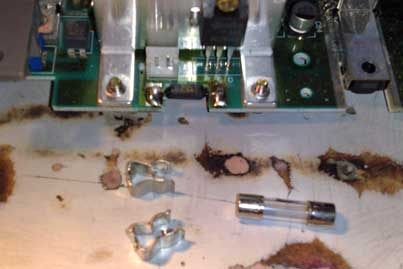
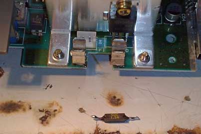
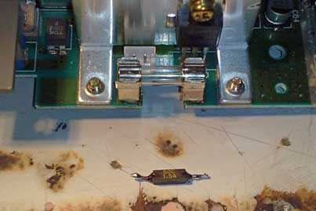

SNES - Ferrou, não liga mais!
 :::.
Por Gigacom
- Tem um pessoal que sabe-Deus-como, consegue queimar um SNES. As vezes é uma besteirinha de nada, como o fusivel do console que queima. Saiba mais sobre isso agora mesmo!
:::.
Por Gigacom
- Tem um pessoal que sabe-Deus-como, consegue queimar um SNES. As vezes é uma besteirinha de nada, como o fusivel do console que queima. Saiba mais sobre isso agora mesmo!
_________________________________________________________________________________
fonte das imagens: mmmonkeys
Ha um fusivel no SNES que tá lá para proteger o console de descargas execivas de energia e outras coisas. Normalmente esse fusivel é a razão para muito Super Nintendo por aí não ligar. A substituição dele é bem simples.
1º Passo - Abra o seu console (o que? Não tem uma chave Gamebit para abrir seu console? Então clique aqui e aprenda a fazer uma!), o fusivel é essa coisinha preta e soldada na placa mãe bem ao lado da chave liga/desliga.

2º Passo - remova o fusivel com defeito e substitua-o por um fusivel de 1,5A axial/encapsulado...

ou...
Substitua o fusivel com defeito por um fusivel de vidro. Eles são fáceis de achar e muito baratos. São muito usados em tudo quanto é tipo de eletrônicos, desde um simples radinho a um televisor 3D. Mas para a coisa ficar bonita, você precisará soldar na placa mãe do SNES o encaixe para esse tipo de fusível. Veja as fotos:



Remonte o console e pronto. Esse tipo de operação costuma ressucitar muitos Super Nintendo. Se você tem algum SNES ai que não liga mais, tente isso.
Acesse o Trombone e comente sobre essa matéria!


Aqui, vou apresentar a restauração de um controle de SNES que comprei em péssimo estado numa feirinha da minha cidade, e que agora está lindinho funcionando perfeitamente. Confira as dicas, e faça uma restauração você também
Restaurando um controle de PSX
Peguei o mais feinho e judiado dos controles para fazer esse artigo. O coitado estava encardido na parte de cima, e debaixo dele encontrei arranhões nas partes de apoio da mão, e bastante sujeira acumulada nas inscrições. O conector do cabo estava muito arranhado e sujo tambem, o cabo então nem se fala... sujava a mão só de pegar